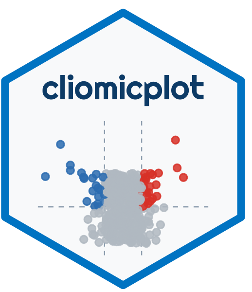

Diamond Bubble Heatmap
Lucas VHH Tran
2026-07-16
Source:vignettes/bubble-heatmap.Rmd
bubble-heatmap.Rmd
100 %
Scroll to zoom · Drag to pan · ← → to navigate
Overview
Diamond bubble heatmap: marker x sample matrix with size = fold-change, colour = significance, alternating row bands, and selective labels.
Simulated data
set.seed(99)
bh <- expand.grid(marker=LETTERS[1:8], sample=paste0("S",sprintf("%02d",1:12)), stringsAsFactors=FALSE)
bh$fold_change <- exp(rnorm(96, mean=rep(seq(0.7,-1.2,length.out=8),each=12), sd=0.55))
bh$padj <- runif(96, 0.001, 0.2)
bh$neg_log_p <- -log10(bh$padj)
head(bh)
#> marker sample fold_change padj neg_log_p
#> 1 A S01 2.265237 0.07133154 1.1467184
#> 2 B S01 2.621671 0.12163721 0.9149335
#> 3 C S01 2.113416 0.11702590 0.9317180
#> 4 D S01 2.570556 0.14843865 0.8284530
#> 5 E S01 1.649445 0.15218777 0.8176202
#> 6 F S01 2.154310 0.18568274 0.7312285